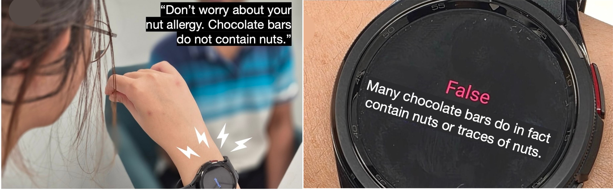
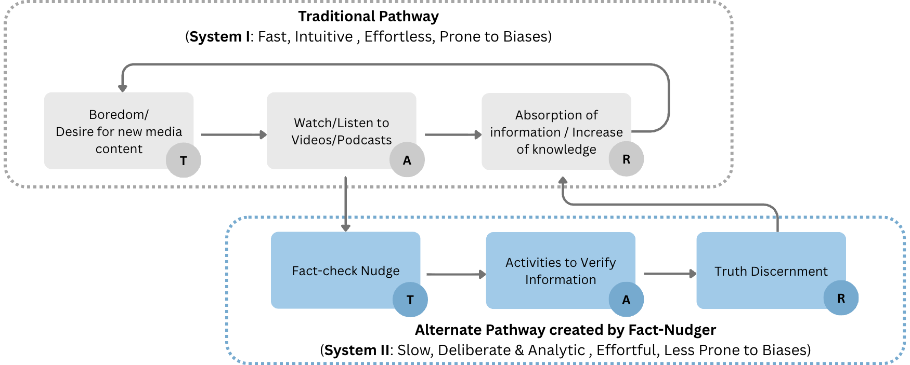
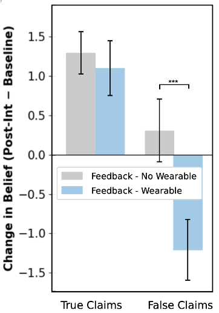

Feeling the Facts
Investigating whether just-in-time AI nudges can support misinformation resilience in live auditory streams, through a wearable Wizard of Oz study.
“Can AI provide support for misinformation resilience in live auditory streams through just-in-time nudges?”

Problem
Misinformation can spread rapidly in live auditory streams such as podcasts and conversations, yet people often absorb claims passively without pausing to verify them. Existing fact-checking tools require deliberate effort and cannot easily intervene in the moment a claim is heard.
The challenge is to understand whether a timely, unobtrusive intervention — delivered during listening — could shift how people engage with potentially false information, without disrupting the listening experience.
Our Approach
We designed a Wizard of Oz study to simulate just-in-time nudges in a controlled experiment. Participants listened to audio clips containing true and false claims while wearing a wristband device. A researcher, acting as the AI back-end, monitored the claims and triggered subtle nudges — a gentle haptic pulse or soft audio tone — when a false claim was detected.
The study draws on dual process theory: everyday media consumption typically follows a fast, intuitive pathway (System I) that is prone to accepting information uncritically. The nudge is designed to activate a slower, more deliberate pathway (System II), prompting the listener to reflect and verify before updating their beliefs.
We examined whether these simulated nudges reduced belief in false claims and increased verification activities compared to a no-nudge control condition.

Dual process theory framing: the nudge redirects listeners from fast, intuitive processing (System I) to slower, deliberate verification (System II).
Key Result
Participants who received just-in-time nudges showed a significant decrease in belief in false claims compared to those who did not, while belief in true claims remained largely unchanged. The result suggests that timely, low-friction nudges can support misinformation resilience during live auditory consumption.

Change in belief (post-intervention minus baseline). The wearable nudge condition produced a significant reduction in belief in false claims (***p < .001), with no significant effect on true claims.
Related Publications
-
Feeling the Facts: Real-time Wearable Fact-checkers Can Use Nudges to Reduce User Belief in False InformationACM CHI 2026